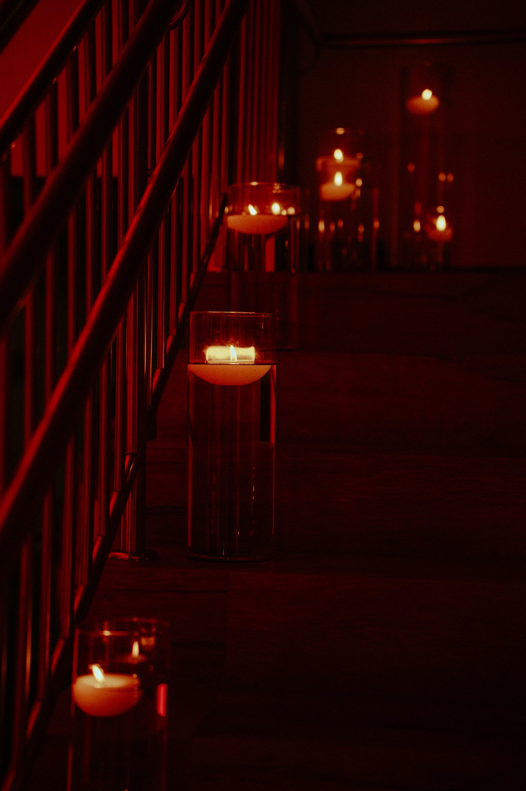

Por que escolhemos a luz natural e o grão analógico
A perfeição digital muitas vezes apaga a pulsação do instante. Uma reflexão sobre a poesia da imperfeição em tempos de filtros imediatos.

Vivemos numa era fascinada por sensores hiperdimensionados, contagem cirúrgica de pixels e algoritmos de inteligência que suavizam a pele antes mesmo de o obturador se fechar. As câmeras modernas são quase milagrosas: enxergam no escuro absoluto e eliminam qualquer vestígio de sombra. Mas a pergunta que me acompanha em cada casamento é simples: a memória humana realmente funciona como um arquivo digital sem ruído?
Quando fechamos os olhos e resgatamos a lembrança de um abraço apertado de dez anos atrás, não nos lembramos do balanço de branco milimetricamente neutro. Lembramos da temperatura do quarto. Da luz oblíqua da tarde que batia na lateral do rosto. Da poeira dourada flutuando suspensa no ar. Da sensação quase tátil e imperfeita de estar vivo naquele instante.
“A perfeição clínica muitas vezes anestesia o afeto. O grão analógico não é um defeito técnico; ele é a própria textura do tempo assentando sobre a imagem.”
O grão como matéria viva
Na fotografia analógica e nas lentes ópticas manuais que escolho para documentar histórias de amor, o grão desempenha o papel da textura em uma folha de papel de algodão feita à mão. Ele confere densidade, peso e calor. Uma fotografia que respira através do grão não parece ter sido gerada por uma máquina fria; ela parece ter sido moldada pela luz física incidindo sobre a matéria.
O grão acolhe a imperfeição. Ele aceita com nobreza um movimento sutil do véu na brisa, um beijo roubado que desfocou levemente porque o coração bateu mais rápido do que a mecânica da câmera, ou a lágrima que escorreu sem pedir licença sob a luz quente das velas.
A luz natural: paciência e respeito ao silêncio
Instalar cinco tripés com iluminação estroboscópica artificial em volta de um altar ou numa capela íntima pode até produzir uma foto uniforme para catálogos comerciais, mas destrói o que havia de mais sagrado: a atmosfera original daquele espaço.
A luz natural exige uma virtude rara: a humildade de observar. Ela pede que o fotógrafo compreenda o caminho do sol, identifique a janela mágica das 17h30 quando as sombras se alongam com doçura e saiba dançar com a penumbra. Quando não invadimos o ambiente com disparos ofuscantes de flash, os noivos e seus familiares esquecem que estão sendo fotografados. Eles não posam para a lente; eles habitam o seu próprio amor.
“Fotografar sem pressa é o único caminho para que a imagem não envelheça como moda, mas amadureça como herança.”
Para daqui a cinquenta anos
As resoluções digitais de hoje parecerão datadas e primitivas daqui a duas décadas. Mas a luz da tarde sobre os cabelos, o toque desarmado das mãos no altar e a poesia do grão são atemporais.
Quando os filhos ou netos de vocês abrirem o álbum físico sobre a mesa de jantar, não queremos que eles vejam uma tendência estética passageira. Queremos que eles sintam o pulso acelerado, o arrepio no antebraço e a verdade límpida de duas pessoas que escolheram caminhar juntas.